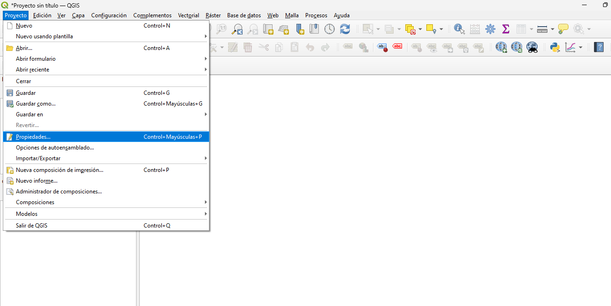

Principio
En este tutorial realizaremos una introducción básica a QGIS para aprender a manejar la aplicación.
Comenzaremos cargando archivos con extensión .shp, que son los más comunes para trabajar con información geográfica,
y configuraremos las coordenadas en el sistema de referencia de Bogotá (Colombia), ya que los datos que utilizaremos corresponden a esta ciudad.
En QGIS existen dos tipos principales de mapas: vectoriales y ráster. Sin embargo, en esta parte del ejercicio trabajaremos únicamente con los mapas vectoriales. Al finalizar, aprenderemos a exportar el mapa en formato PDF, listo para guardar o imprimir.
Para este ejercicio utilizaremos bases de datos disponibles en la plataforma Bogotá Mapas, enlazadas con los datos abiertos de la ciudad y con el Laboratorio Urbano de Bogotá. Entre ellas se encuentran:
- Consultorios clínicos de Bogotá (puntos).
- Territorios de redes de salud por localidad (polígonos).
- Polígonos de localidades (polígonos).
- Polígonos de UPZ (polígonos).
PASO 1: Configurar QGIS para Bogotá
Lo primero que debemos hacer es asegurarnos de que el sistema de referencia de coordenadas (SRC) esté configurado correctamente para Bogotá.
- Abrir la aplicación QGIS desde el menú de inicio o el acceso directo.

- Ir a Proyecto → Propiedades → SRC.
- En la opción Filtrar, escribir
EPSG:3116 – MAGNA-SIRGAS / Colombia Bogotá zone. - Seleccionar la opción, luego hacer clic en Aplicar y después en Aceptar.

- Guardar el proyecto como archivo
.qgzpara conservar la configuración.
Paso 2: Descarga los mapas vectoriales
Opción A: Descargar los datos desde Mapas Bogotá
- Ir al navegador web
- Ir a la página: Mapas Bogotá
- En el portal de Mapas Bogotá, selecciona la opción Ver datos (puedes elegir por Temática o por Sector).
- Haz clic en Más información en el conjunto de datos que quieras descargar; esto te llevará al portal de Datos Abiertos de Bogotá.

- En el listado de formatos disponibles, busca el archivo Shapefile (
.shp), selecciona Exportar y luego haz clic en Descargar. - Y Repite este mismo procedimiento con las demás bases que necesites de Mapas Bogotá.
- En caso de que prefieras descargar directamente desde el portal de Datos Abiertos de Bogotá, busca la temática que te interese, selecciona la base correspondiente y asegúrate de que tenga el formato Shapefile (
.shp). Luego sigue el mismo proceso explicado en los pasos anteriores para exportar y descargar.
Opción B: Descargar las bases de Localidades y UPZ desde el Laboratorio Urbano de Bogotá
- Ir al navegador web
- Para descargar las Localidades, ingresa a: Localidades
- Para descargar las UPZ, ingresa a: UPZ
- En cada página, selecciona la opción Exportar.
- Descarga los archivos en formato Shapefile (
.shp).
PASO 3 Verificación de la carga de los datos
- Arrastra los archivos descargados al panel de capas de QGIS; allí podrás verlos cargados en el proyecto.

- Haz clic derecho sobre una capa para acceder a sus opciones: cambiar el nombre, o ver y modificar el SRC de la capa, entre otras.

- Verifica que las capas tengan asignado el sistema de coordenadas correcto (si no lo tienen, haz clic en Propiedades → Fuente y selecciona el SRC; en caso de que el archivo venga con otro SRC, busca el archivo .prj con el mismo nombre original) y selecciona el SRC correcto (EPSG:3116).

Otra forma de cargar los datos:
- En QGIS, ve al menú Capa → Añadir capa → Añadir capa vectorial.

- En la sección Fuente, haz clic en los tres puntos (…) y navega hasta la carpeta donde guardaste tus capas.

- Selecciona los archivos y haz clic en Añadir; las capas deberían aparecer en el panel de capas de QGIS.

PASO 4 CONFIGURACIÓN DE COLORES
- Haz clic derecho sobre la capa y selecciona Propiedades.

- En la ventana que se abre, ubícate en la pestaña Simbología.

- Selecciona el Marcador simple y allí podrás cambiar el tamaño, el color de relleno, el estilo de la marca y otros parámetros de visualización.
- En la parte superior de la ventana de Simbología, aparece un cuadro con el nombre Símbolo único. Desde allí puedes cambiar el tipo de simbología (por ejemplo: categorías, graduado, etc.), lo que permite representar la información de manera más detallada.

- Finalmente, haz clic en Aplicar y luego en Aceptar para guardar los cambios.
- Repite este proceso con las demás capas para que todas tengan una visualización clara y coherente.
PASO 5 HERRAMIENTAS VECTORIALES
QGIS cuenta con una amplia variedad de herramientas para trabajar con datos vectoriales. En este paso aprenderemos a utilizar algunas funciones básicas.
- En la barra superior selecciona la opción Vectorial → Herramientas de geoprocesamiento. Allí encontrarás opciones como disolver, intersecar, unión, diferencia, entre otras.

- Por ejemplo, con la herramienta Disolver puedes agrupar polígonos que comparten un mismo atributo (como la localidad a la que pertenecen).

- Al seleccionar la opción de Disolver, se abrirá una ventana donde debes indicar la capa de entrada y el campo por el cual deseas agrupar.

- Define la ruta y el nombre del archivo de salida, y luego haz clic en Ejecutar.

- Una vez finalizado el proceso, verás que en el panel de capas se añade la nueva capa resultante de la operación de disolver.

- De la misma manera puedes utilizar las demás herramientas disponibles en el menú Vectorial para explorar distintos tipos de análisis espaciales.

- Recuerda que cada herramienta genera una nueva capa de salida, la cual puedes guardar en una carpeta de tu elección para mantener organizados tus resultados.

PASO 6 VISUALIZACIÓN DE GRÁFICAS
En esta sección utilizaremos un complemento para crear gráficas a partir de los atributos de las capas.
- En la barra superior selecciona Complementos → Administrar e instalar complementos y busca DataPlotly. Instálalo.

- Abre el panel desde Complementos → DataPlotly → DataPlotly Panel.

- Selecciona la capa, el tipo de gráfico y el campo a graficar. Luego crea la gráfica.

- Visualiza y ajusta la gráfica desde el panel; puedes exportarla si lo requieres.

- Prueba con otros tipos de gráficos y campos para explorar la información.

PASO 7 COMPLEMENTO QUICKMAPSERVICES
Con este complemento podrás añadir mapas base desde múltiples servicios (Google, OSM, ESRI, entre otros) para complementar la visualización de tus datos vectoriales.
- En la barra superior selecciona la opción Complementos → Administrar e instalar complementos, escribe QuickMapServices en la barra de búsqueda e instálalo.

- Luego dirígete a Web → QuickMapServices → Settings. Haz clic en la pestaña More Services y selecciona Get Contributed Pack. Con esto activarás todos los mapas disponibles.

- Ahora dirígete a Web → QuickMapServices → Google → Google Satellite Hybrid para cargar el mapa satelital.

- El mapa base satelital se cargará en el fondo, mostrando tus capas vectoriales superpuestas sobre la imagen de satélite.

PASO 8 Crear un mapa para impresión
- En el menú, haz clic en Propiedades y selecciona Nueva composición de impresión.
- Asigna un nombre a tu mapa para identificarlo fácilmente.

- En el menú de la composición, dirígete a Añadir elementos.
- Allí encontrarás opciones como añadir mapa, imágenes, etiquetas, flecha del norte, escala, entre otros. También puedes ver estas herramientas en la parte izquierda de la pantalla.

- Para agregar un título, selecciona Añadir etiqueta. Desde ahí puedes escribir el nombre del mapa, además de cambiar el color, tipo de letra y tamaño del texto.

- Una vez añadidos todos los elementos, tu mapa quedará listo para impresión.

- Finalmente, en el menú selecciona Exportar a PDF, haz clic y guarda tu mapa en tu computador o en la nube.
Con esto concluimos la primera parte del tutorial de QGIS Vectorial.